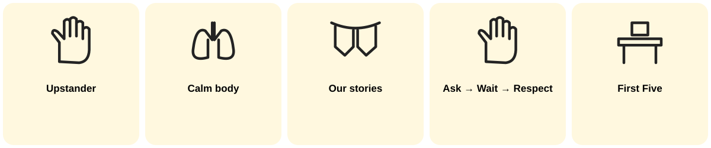

Week 10 · Monday October 5 · Welcome · 0:00
We learned so much!
Week 10 · Monday October 5 · Regulate · 2:00
1. Smell the flower. 2. Blow the candle. 3. Three times.
We learned this in August.
Week 10 · Monday October 5 · Orient · 2:00
Proud
I can do it!
Learned
Now I know it.
Next
I am still growing.
Week 10 · Monday October 5 · Connect · Look · 2:00

Question: Point to one thing we learned.
Week 10 · Monday October 5 · Connect · Share · 1:00
Week 10 · Monday October 5 · Practice · 3:00
PROUD (star): Draw something you can do now.
LEARNED (light bulb): Circle a picture.
NEXT (seedling): I am still growing at ____.
Breaks look different for every family. Plans and reflections stay private unless the student chooses to share.
Week 10 · Monday October 5 · Commit · 3:00
Today I will use ____. (pictures: flower breath
Ask → Wait → Respect
helping hand
First Five)
Say it, draw it, or keep it private.
Week 10 · Monday October 5 · Transition · 2:00
Before we move on: What is one thing you are proud you can do?
1. Remember it. 2. Use it. 3. Begin.